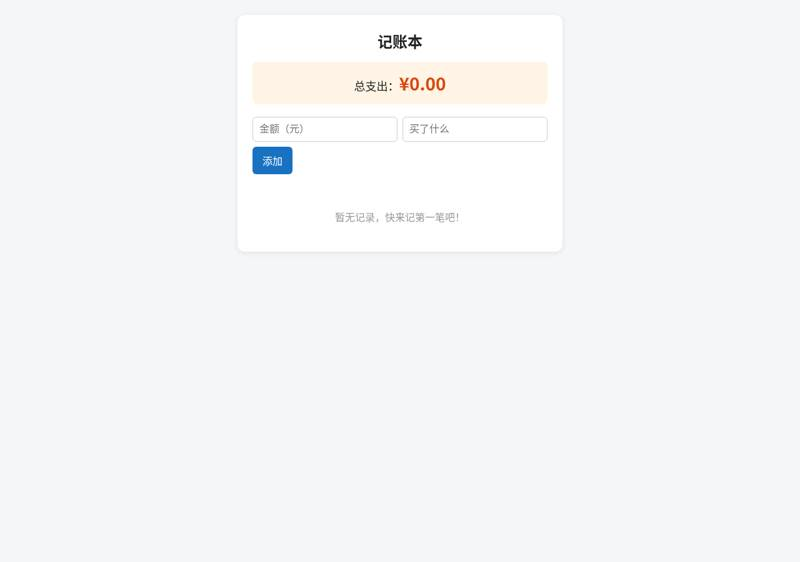
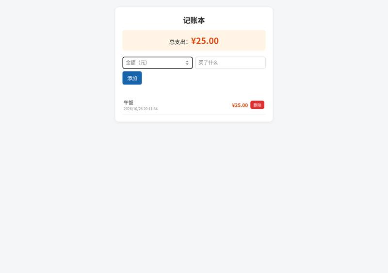
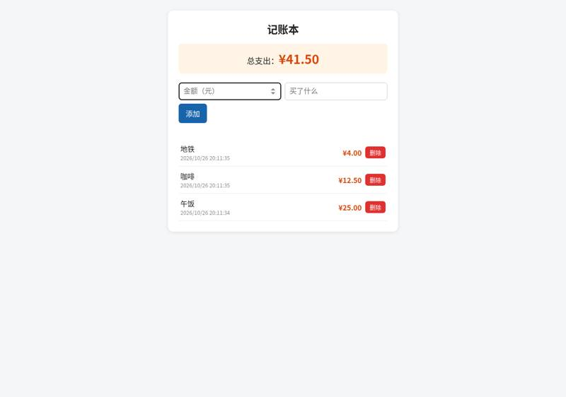
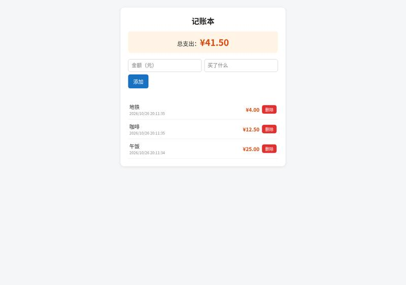
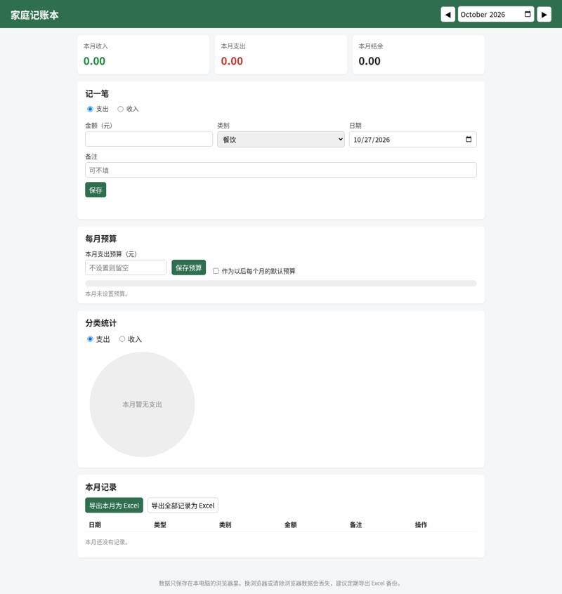
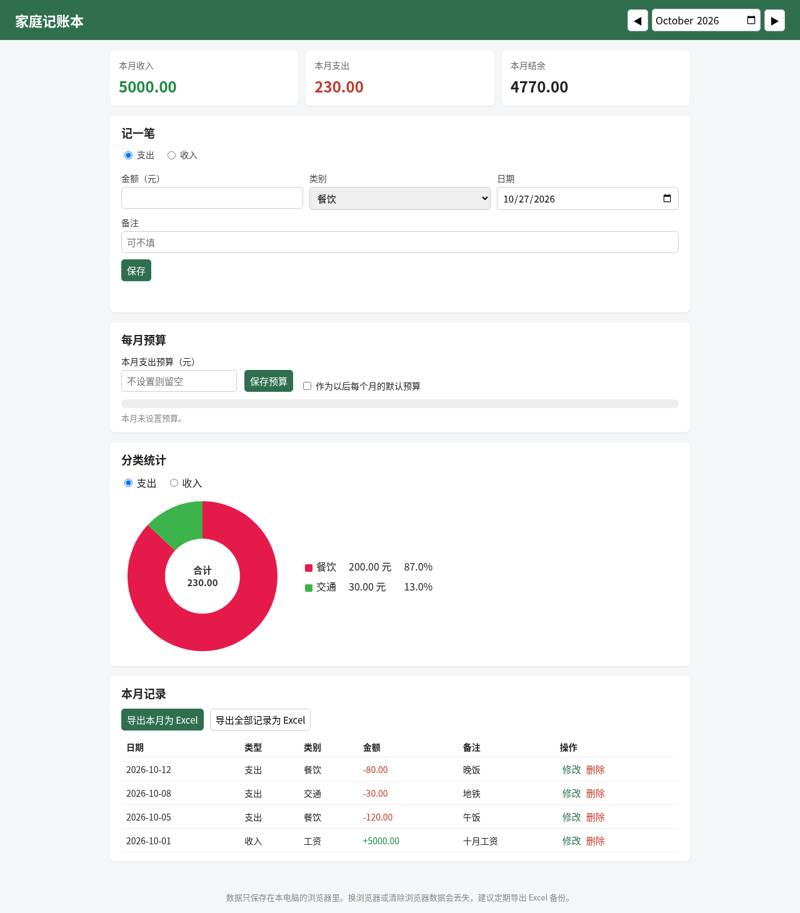
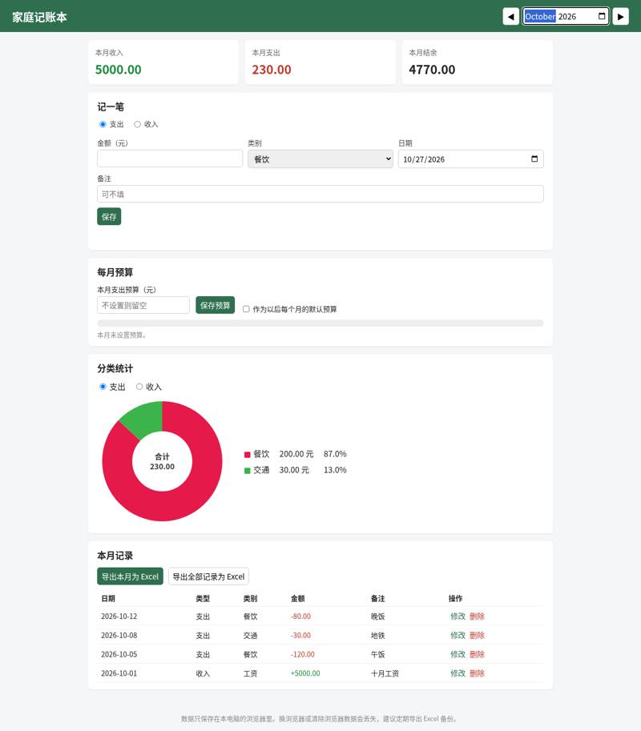
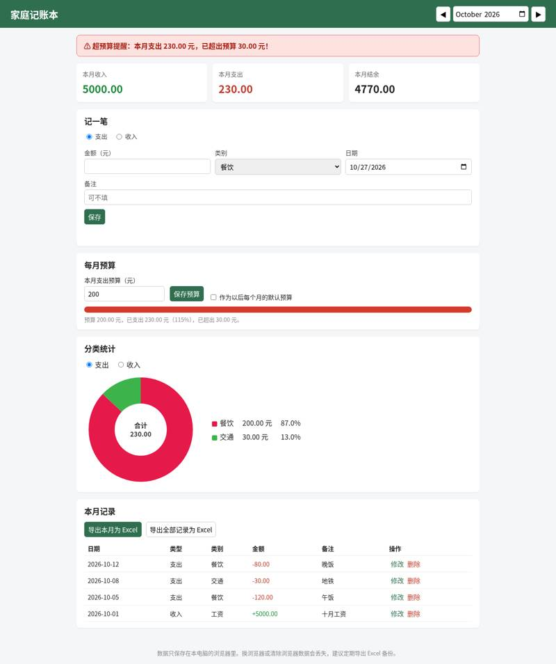
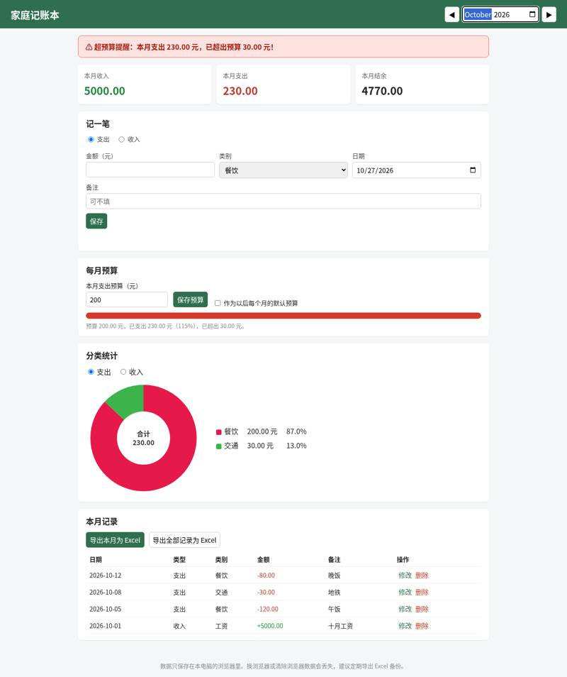

asklokesh/loki-mode: vibe coding test
Installed from its README in a throwaway sandbox, then used by Claude Code (Claude Opus 5.5) to build two apps from requests written the way someone who cannot code would write them. Whenever the build stopped to ask a question or for approval, it got the same reply. A separate tester session, with no tool loaded, opened each app in a browser and ran the checks; we went through every screenshot. All results · The task · The tester's checks
Install: SETUP: done loki-mode CLI v11.77.0 (`sudo npm install -g loki-mode`) + Claude Code plugin (`claude plugin marketplace add ~/src` && `claude plugin install loki-mode@loki-mode`, MCP server connected) + Python cryptography for signed receipts (`pip3 install --user --break-system-packages cryptography`); `loki doctor` passes with Claude Code as provider (repo commit 30f02277c65d)
One sentence: an expense page
The request, word for word: 帮我做一个记账小网页：每次花钱记一笔（花了多少、买了什么），页面上能看到一共花了多少，关掉浏览器再打开，记录还在。
Ran: all 4 checks passed. Opens: double-click. Built in 10.8 minutes (limit 30); it stopped to ask 1 time(s); how it ended: finished. Usage at API prices: $0.6 (3.5 times the run with no tool). Packages: none (plain HTML, CSS and JavaScript).
| Check | Verdict | What the tester saw | Screenshot |
|---|---|---|---|
| opens | pass | file:// page shows: '记账本\n总支出：¥0.00\n添加\n暂无记录，快来记第一笔吧！' |  |
| records an expense | pass | after adding 25/午饭 page text: '记账本\n总支出：¥25.00\n添加\n午饭\n2026/10/26 20:11:34\n¥25.00\n删除'; total 25.00 |  |
| total is right | pass | total shown: 41.50; page: '记账本\n总支出：¥41.50\n添加\n地铁\n2026/10/26 20:11:35\n¥4.00\n删除\n咖啡\n2026/10/26 20:11:35\n¥12.50\n删除\n午饭\n2026/10/26 20:11:34\n¥25.00\n删除' |  |
| still there after closing and reopening | pass | after reopen total: 41.50; page: '记账本\n总支出：¥41.50\n添加\n地铁\n2026/10/26 20:11:35\n¥4.00\n删除\n咖啡\n2026/10/26 20:11:35\n¥12.50\n删除\n午饭\n2026/10/26 20:11:34\n¥25.00\n删除' |  |


Where it stopped, and got the reply 「我不懂这些，你按你推荐的来，继续做。」
The progress watcher has stopped. That's expected, because Loki already finished and nothing else is running. I still need your decision: **Accept** (add the page to the main version of your project) or **Reject** (throw the draft away)?
One paragraph: a family ledger
The request, word for word: 做一个家庭记账本网页：能记收入和支出（金额、类别、日期、备注），能按月看收入、支出和结余，能看每个类别花了多少（最好有图），可以设每月预算、超了要提醒，还能把记录导出成 Excel 表格。数据存在我电脑上就行。
Ran: all 8 checks passed. Opens: double-click. Built in 11.0 minutes (limit 45); it stopped to ask 1 time(s); how it ended: finished. Usage at API prices: $1.11 (1.1 times the run with no tool). Packages: none (plain HTML, CSS and JavaScript).
Our note: Run a second time: during the first, the Mac went to sleep, which cut its install session short and let the run's outer limit expire. That attempt is kept in out-void/ and not counted.
| Check | Verdict | What the tester saw | Screenshot |
|---|---|---|---|
| opens | pass | file:// page title '家庭记账本', shows 家庭记账本 with 记一笔 form, summary cards, budget, 分类统计, export buttons |  |
| records income and expenses | pass | October table rows: ['2026-10-12 支出 餐饮 -80.00 晚饭 修改删除', '2026-10-08 支出 交通 -30.00 地铁 修改删除', '2026-10-05 支出 餐饮 -120.00 午饭 修改删除', '2026-10-01 收入 工资 +5000.00 十月工资 修改删除'] |  |
| month's income, spending and balance | pass | October cards: 本月收入 5000.00, 本月支出 230.00, 本月结余 4770.00 |  |
| spending by category | pass | 分类统计 (支出) shows: 分类统计 | 支出 | 收入 | 餐饮 200.00 元 87.0% | 交通 30.00 元 13.0% |  |
| switches between months | pass | September rows ['2026-09-15 支出 购物 -999.00 修改删除'], cards 收入 0.00 支出 999.00 结余 -999.00; back to October: 收入 5000.00 支出 230.00 结余 4770.00 |  |
| warns over budget | pass | budget section: 每月预算 | 本月支出预算（元） | 保存预算 | 作为以后每个月的默认预算 | 预算 200.00 元，已支出 230.00 元（115%），已超出 30.00 元。; warning lines: ['⚠ 超预算提醒：本月支出 230.00 元，已超出预算 30.00 元！', '预算 200.00 元，已支出 230.00 元（115%），已超出 30.00 元。']; dialogs: [] |  |
| exports a spreadsheet | pass | clicked 导出全部记录为 Excel -> 家庭记账本_全部记录.xlsx (.xlsx); rows: [('日期', '类型', '类别', '金额', '备注'), ('2026-09-15', '支出', '购物', 999, None), ('2026-10-01', '收入', '工资', 5000, '十月工资'), ('2026-10-05', '支出', '餐饮', 120, '午饭'), ('2026-10-08', '支出', '交通', 30, '地铁'), ('2026-10-12', '支出', '餐饮', 80, '晚饭'), ('月份', '收入', '支出', '结余'), ('2026-09', 0, 999, -999), ('2026-10', 5000, 230, 4770)] |  |
| still there after closing and reopening | pass | after restart October rows ['2026-10-12 支出 餐饮 -80.00 晚饭 修改删除', '2026-10-08 支出 交通 -30.00 地铁 修改删除', '2026-10-05 支出 餐饮 -120.00 午饭 修改删除', '2026-10-01 收入 工资 +5000.00 十月工资 修改删除']; cards 收入 5000.00 支出 230.00 结余 4770.00; September rows ['2026-09-15 支出 购物 -999.00 修改删除'] |  |


Where it stopped, and got the reply 「我不懂这些，你按你推荐的来，继续做。」
The build already finished, so this was just the progress watcher shutting off and nothing has changed. I still need your answer: should I **Accept** the household ledger Loki built (merge it into your main project), or **Reject** it (throw it away)?